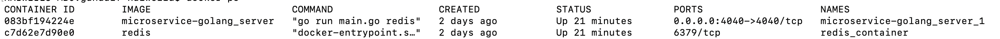
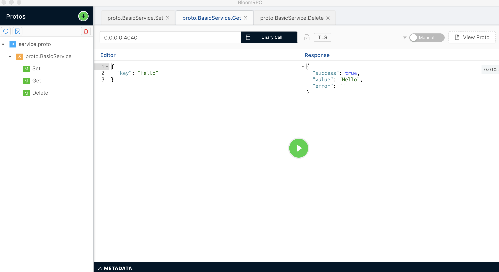

在之前的文章《漫谈微服务》我已经简单的介绍过微服务，微服务特性是轻量级跨平台和跨语言的服务，也列举了比较了集中微服务通信的手段的利弊，本文将通过RPC通信的方式实现一个增删查Redis的轻量级微服务示例，大部分内容翻译自文章《Microservice in golang, using Redis and gRPC》，中间加上自己的实践和理解。
Mac OS
go version go1.12.4 darwin/amd64
Docker version 18.09.2, build 6247962
https://github.com/felipeinfantino/microservice-golang
选用gRPC的原因是因为gRPC本身是一款开源且高性能的RPC框架，支持跨平台，支持golang，java，c，C++ 等10多种编程语言。因为我们要实现一个通过gRPC通信的基于Redis 数据库的增删改微服务，所以我们首先需要定义一个gRPC的通信描述文件server.proto：
syntax = "proto3";
package proto;
// Server Requests
message SetRequest{
string key = 1;
string value = 2;
}
message GetRequest{
string key = 1;
}
message DeleteRequest{
string key = 1;
}
// Server Response
message ServerResponse{
bool success = 1;
string value = 2;
string error = 3;
}
// Define service
service BasicService{
rpc Set(SetRequest) returns (ServerResponse);
rpc Get(GetRequest) returns (ServerResponse);
rpc Delete(DeleteRequest) returns (ServerResponse);
}
想要将上面的server.proto文件转换为golang代码需要安装protocol buffer的编译器：
1.下载https://github.com/protocolbuffers/protobuf/releases/tag/v3.11.0中的protoc-3.11.0-osx-x86_64.zip包。
2.解压拷贝里面的二进制protoc及google子目录到该示例工程目录下。
3.通过上面定义的server.proto 生成golang代码,可以看到proto目录下生成了service.pb.go文件。
./protoc --proto_path=proto --proto_path=google --go_out=plugins=grpc:proto service.proto如果还不行可以参考protocol buffer官方安装详细步骤 https://github.com/protocolbuffers/protobuf
工程代码目录结构如下：
. ├── Dockerfile ├── README.md ├── database │ ├── database.model.go │ ├── errors.go │ └── redis.go ├── docker-compose.yml ├── go.mod ├── go.sum ├── google │ └── protobuf │ ├── any.proto │ ├── api.proto │ ├── compiler │ │ └── plugin.proto │ ├── descriptor.proto │ ├── duration.proto │ ├── empty.proto │ ├── field_mask.proto │ ├── source_context.proto │ ├── struct.proto │ ├── timestamp.proto │ ├── type.proto │ └── wrappers.proto ├── main ├── main.go ├── proto │ ├── service.pb.go │ └── service.proto └── protoc
package database
// Database abstraction
type Database interface {
Set(key string, value string) (string, error)
Get(key string) (string, error)
Delete(key string) (string, error)
}
// Factory looks up acording to the databaseName the database implementation
func Factory(databaseName string) (Database, error) {
switch databaseName {
case "redis":
return createRedisDatabase()
default:
return nil, &NotImplementedDatabaseError{databaseName}
}
} 定义了一个Database的接口，里面含有增删查三种方法，只要实现了这三种方法的数据库都可以作为该微服务的数据库，所以提供一个工厂函数供用户后续扩展，目前只实现了Redis一种存储。Redis的实现直接引用了开源第三方Redis操作用github/go-redis/redis 然后封装了上面增删查三种方法。这里就不展开讲redis实现了。
然后就是我们的golang主程序，程序逻辑为开启gRPC服务端，提供增删查三个接口及响应。代码如下：
func main() {
listener, err := net.Listen("tcp", ":4040")
if err != nil {
panic(err) // The port may be on use
}
srv := grpc.NewServer()
databaseImplementation := os.Args[1]
db, err = database.Factory(databaseImplementation)
if err != nil {
panic(err)
}
proto.RegisterBasicServiceServer(srv, &server{})
fmt.Println("Prepare to serve")
if e := srv.Serve(listener); e != nil {
panic(err)
}
}
func (s *server) Set(ctx context.Context, in *proto.SetRequest) (*proto.ServerResponse, error) {
value, err := db.Set(in.GetKey(), in.GetValue())
return generateResponse(value, err)
}
func (s *server) Get(ctx context.Context, in *proto.GetRequest) (*proto.ServerResponse, error) {
value, err := db.Get(in.GetKey())
return generateResponse(value, err)
}
func (s *server) Delete(ctx context.Context, in *proto.DeleteRequest) (*proto.ServerResponse, error) {
value, err := db.Delete(in.GetKey())
return generateResponse(value, err)
}
func generateResponse(value string, err error) (*proto.ServerResponse, error) {
if err != nil {
return &proto.ServerResponse{Success: false, Value: value, Error: err.Error()}, nil
}
return &proto.ServerResponse{Success: true, Value: value, Error: ""}, nil
}
为了测试方便用docker-compose定义了我们的微服务，对docker-compose不太熟悉的朋友可以简单的看下我之前写的《利用Docker Compose快速搭建本地测试环境》这篇文章。该服务的docker-compose.yaml内容如下：
version: "3.7"
services:
server:
build: .
ports:
- "4040:4040"
depends_on:
- redis
redis:
container_name: redis_container
image: redis
可以看出我们通过暴露4040端口提供我们的服务，服务依赖于redis，所以redis服务会在我们服务之前以容器的方式被拉起来。微服务的启动命令可以从Dockerfile中获取：
FROM golang:latest RUN mkdir /app ADD . /app/ WORKDIR /app EXPOSE 4040 CMD ["go", "run", "main.go", "redis"]
拉起服务：
docker-compose up
Starting redis_container ... done
Starting microservice-golang_server_1 ... done
Attaching to redis_container, microservice-golang_server_1
redis_container | 1:C 22 Dec 2019 13:11:10.761 # oO0OoO0OoO0Oo Redis is starting oO0OoO0OoO0Oo
redis_container | 1:C 22 Dec 2019 13:11:10.761 # Redis version=5.0.7, bits=64, commit=00000000, modified=0, pid=1, just started
redis_container | 1:C 22 Dec 2019 13:11:10.761 # Warning: no config file specified, using the default config. In order to specify a config file use redis-server /path/to/redis.conf
redis_container | 1:M 22 Dec 2019 13:11:10.763 * Running mode=standalone, port=6379.
redis_container | 1:M 22 Dec 2019 13:11:10.763 # WARNING: The TCP backlog setting of 511 cannot be enforced because /proc/sys/net/core/somaxconn is set to the lower value of 128.
redis_container | 1:M 22 Dec 2019 13:11:10.763 # Server initialized
redis_container | 1:M 22 Dec 2019 13:11:10.763 # WARNING you have Transparent Huge Pages (THP) support enabled in your kernel. This will create latency and memory usage issues with Redis. To fix this issue run the command 'echo never > /sys/kernel/mm/transparent_hugepage/enabled' as root, and add it to your /etc/rc.local in order to retain the setting after a reboot. Redis must be restarted after THP is disabled.
redis_container | 1:M 22 Dec 2019 13:11:10.764 * DB loaded from disk: 0.000 seconds
redis_container | 1:M 22 Dec 2019 13:11:10.764 * Ready to accept connections
server_1 | Prepare to serve
通过docker ps看到启动了两个容器，一个是redis，一个是我们的主程序：

测试的客户端用的gRPC的图形化工具BloomRPC，安装方法比较简单：brew cask install bloomrpc
然后导入我们的gRPC定义文件server.proto就能点击测试：

本文从工程实践的角度带读者实现了一个通过gRPC通信的增删查Redis的微服务，希望对读者有所启发。